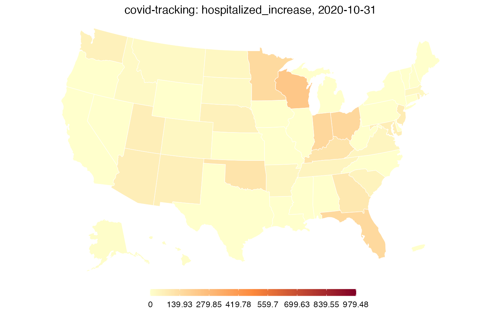

vignettes/external-data.Rmd
external-data.RmdWhile the COVIDcast Epidata API provides numerous useful COVID data streams, you may sometimes find yourself with relevant data from a different source. This package provides the tools you need to load such data and use it alongside COVIDcast data—for example, you can calculate correlations with covidcast_cor() and make maps using plot.covidcast_signal().
Let’s illustrate this in action using data from the COVID Tracking Project. They provide CSV files for download containing daily state-level data on numerous metrics, including cases, deaths, hospitalizations, and test results.
We’ve saved a sample of the data in this package to use as an example. Let’s load it and examine a few columns using knitr::kable() to print them nicely:
library(dplyr) data <- read.csv(system.file("extdata", "covid-tracking-project-oct-2020.csv", package = "covidcast", mustWork = TRUE)) data %>% select(date, state, death, deathIncrease, hospitalizedCurrently, hospitalizedIncrease) %>% head() %>% knitr::kable()
| date | state | death | deathIncrease | hospitalizedCurrently | hospitalizedIncrease |
|---|---|---|---|---|---|
| 2020-10-31 | AK | 82 | 1 | 94 | 7 |
| 2020-10-31 | AL | 2967 | 35 | 960 | 0 |
| 2020-10-31 | AR | 1925 | 25 | 652 | 35 |
| 2020-10-31 | AS | 0 | 0 | NA | 0 |
| 2020-10-31 | AZ | 5979 | 45 | 889 | 68 |
| 2020-10-31 | CA | 17626 | 55 | 3212 | 0 |
This is in a convenient format: Each day’s observations for each state are in one row. Suppose we would like to extract hospitalizedIncrease as a signal we want to map and analyze alongside other data fetched with covidcast_signal().
To do this, we use as.covidcast_signal(). It expects a data frame with at least three columns:
time_value: a Date object giving the observation datevalue: the value of the observation, such as the number of deaths or hospitalizationsgeo_value: the location, such as state or county, in the same form as returned by covidcast_signal() (such as two-letter lowercase abbreviations for states and FIPS codes for counties)Other columns are preserved unchanged. (In particular, if an issue column is present, it is used as the issue date of each observation. This is important if your data source includes multiple revisions of each observation.) as.covidcast_signal() also needs to know the geo_type (state, in this case) and source/signal name to apply to the data. With a bit of dplyr data wrangling, we can do this easily:
library(covidcast) hospitalized <- data %>% select(time_value = date, geo_value = state, value = hospitalizedIncrease) %>% mutate(geo_value = tolower(geo_value), time_value = as.Date(time_value)) %>% as.covidcast_signal(geo_type = "state", data_source = "covid-tracking", signal = "hospitalized_increase") head(hospitalized) %>% knitr::kable()
| data_source | signal | geo_value | time_value | value | issue |
|---|---|---|---|---|---|
| covid-tracking | hospitalized_increase | ak | 2020-10-31 | 7 | 2021-01-13 |
| covid-tracking | hospitalized_increase | al | 2020-10-31 | 0 | 2021-01-13 |
| covid-tracking | hospitalized_increase | ar | 2020-10-31 | 35 | 2021-01-13 |
| covid-tracking | hospitalized_increase | as | 2020-10-31 | 0 | 2021-01-13 |
| covid-tracking | hospitalized_increase | az | 2020-10-31 | 68 | 2021-01-13 |
| covid-tracking | hospitalized_increase | ca | 2020-10-31 | 0 | 2021-01-13 |
This allows us to make maps using the same functions used for other COVIDcast data:
plot(hospitalized, plot_type = "choro")
## Warning: Metadata for signal mean and standard deviation not available;
## defaulting to observed mean and standard deviation to set plot range.
Now that our data is loaded as a covidcast_signal object, we can use it alongside other signals from the API. For example, let’s examine how new COVID hospitalizations correlate with outpatient doctor visits with deaths during October 2020, where we use death data as reported by the API.
deaths <- covidcast_signal("indicator-combination", "deaths_incidence_prop", start_day = "2020-10-01", end_day = "2020-10-31", geo_type = "state") covidcast_cor(deaths, hospitalized, by = "time_value")
## # A tibble: 31 x 2
## time_value value
## <date> <dbl>
## 1 2020-10-01 0.146
## 2 2020-10-02 0.240
## 3 2020-10-03 0.0772
## 4 2020-10-04 0.183
## 5 2020-10-05 -0.126
## 6 2020-10-06 0.160
## 7 2020-10-07 0.0513
## 8 2020-10-08 0.0611
## 9 2020-10-09 0.0447
## 10 2020-10-10 0.138
## # … with 21 more rowsWe can also use the tools provided by this package to place both signals into a single data frame for analysis. For example, to build a model that uses hospitalizations and other data to predict deaths, it may be convenient to produce a data frame where each row represents one state on one day, and each column is a variable (such as hospitalization or death). Using aggregate_signals(), this is easy:
death_hosp <- aggregate_signals(list(deaths, hospitalized), format = "wide") head(death_hosp) %>% knitr::kable()
| geo_value | time_value | value+0:indicator-combination_deaths_incidence_prop | value+0:covid-tracking_hospitalized_increase |
|---|---|---|---|
| ks | 2020-10-26 | -0.0343252 | 62 |
| wa | 2020-10-29 | 0.1181894 | 25 |
| mo | 2020-10-19 | -0.5376845 | 0 |
| va | 2020-10-24 | 0.4334827 | 16 |
| tx | 2020-10-31 | 0.3069401 | 0 |
| ga | 2020-10-29 | 0.4332501 | 146 |